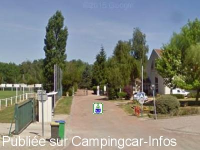

ACS = Aire de services sur camping acceptant le passage pour les services de :
TRAINEL
(N° 810)
Accès/adresse :
Rue de Fontaine Fourches
Camping municipal Saint Barthélémy **
10400 TRAÎNEL
Camping municipal Saint Barthélémy **
10400 TRAÎNEL
Latitude : (Nord) 48.41248° Décimaux ou 48° 24′ 44′′
Longitude : (Est) 3.42962° Décimaux ou 3° 25′ 46′′
Tarif : 2015
Emplacement, C-C : 5 à 6 €
Type de borne : Autre
Services :


Accès handicapés
Lave-linge
Jeux pour enfants
Salle de réunion
Tennis,
Autres informations :
Ouvert du 01/04 au 30/09
57 emplacements
Tel : +33(0)325 391 336

Le 09/02/2016 par Entrée camping
Aucun commentaire pour le moment